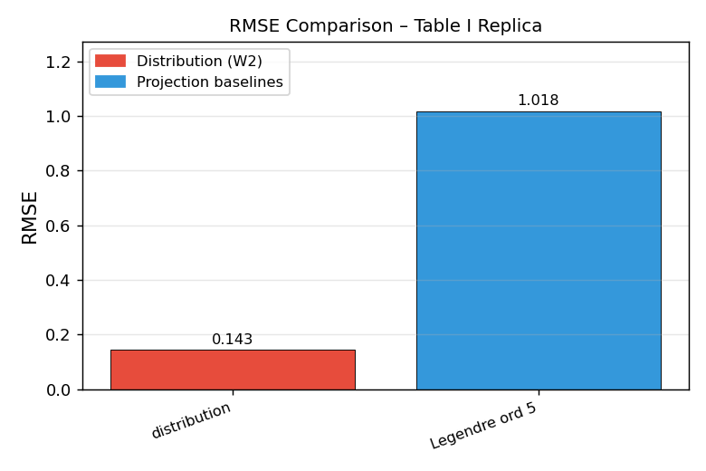
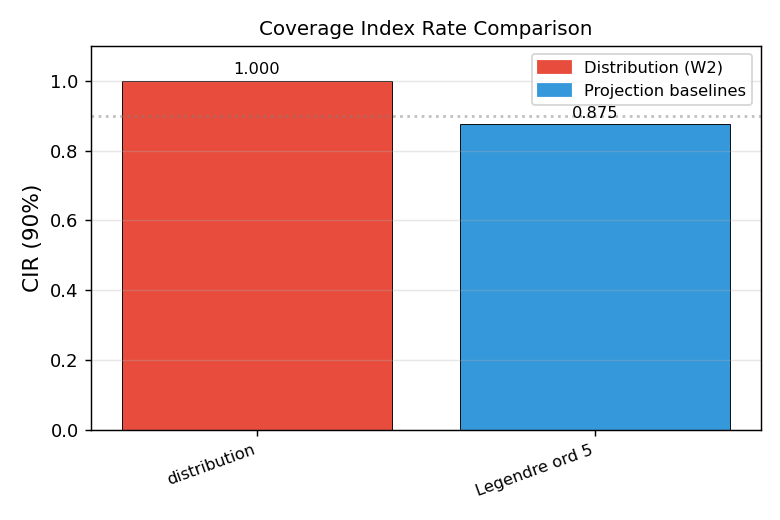
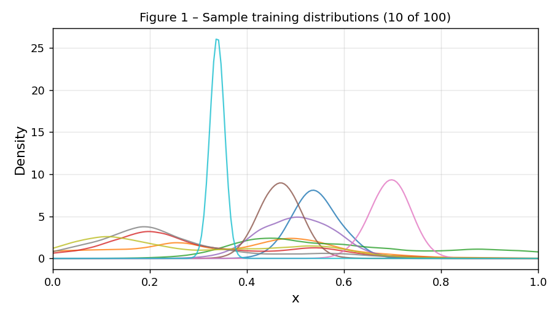

Home / Research / Wasserstein GP
Research · IIT Palakkad · Statistics
Gaussian Process Regression for Distribution-Valued Inputs
A replication of the simulation study in Bachoc et al. (2018), in which a Gaussian process takes probability distributions as inputs, and its extension to Wasserstein Tangent Gaussian Processes (WTGP): a GP prior on the tangent space of one-dimensional Wasserstein space.
Paper
Open paper (PDF) ↗Timeline
- SelectionSelected as one of 122 fellows from more than 15,000 applications.
- Week 1: reading and first proposalRead Bachoc et al. (2018) and presented an initial proposal built on spatial statistics: Moran’s I, Kriging and Wasserstein distance.
- Replication of Table IImplemented data generation, the W₂ distance matrix, the power-exponential kernel, MLE fitting, Kriging prediction, and Legendre and PCA baselines.
- Wasserstein Tangent GPIsometric quantile-function embedding of 1-D Wasserstein space into L²[0,1], a GP prior on the tangent space, kernel validity by a Kronecker-product spectral argument, closed-form posterior.
- TheoryPossible extensions include GP theory for monotonicity-constrained input spaces, high-dimensional additive GP models, and Bayesian inference in non-standard input geometries.
How the thinking developed
Why the similarity measure is the model
Two locations can share a mean and differ in the behaviour underneath it. A kernel on means cannot see that, so the project starts from the metric rather than the regression.
Why W₂ and not L²
Two densities differing by a small shift can be far apart in L² when their mass barely overlaps, yet close in W₂, which measures the cost of moving one into the other.
In one dimension, W₂ is sorting
The quantile function is the sorted sample, so W₂ is the L² distance between quantile functions. No density estimation is needed.
From replication to extension
Because the quantile map is an isometry into L²[0,1], a GP prior can be placed on the resulting tangent space. That is the step that turns the replication into WTGP.
Pipeline
- Distribution inputsSamples from μ₁,…,μₙ, generated with GP perturbations of a base family.
- Quantile functionsInverse CDFs on a common grid of levels.
- W₂ distance matrixd(μᵢ,μⱼ) = ‖F⁻¹ᵢ − F⁻¹ⱼ‖ in L²[0,1].
- KernelPower-exponential: K(μᵢ,μⱼ) = σ² exp(−(d/θ)^α), plus a nugget η on the diagonal.
- MLE fittingMaximise the log-likelihood over (σ², θ, α, η).
- Kriging predictionPosterior mean and variance at test distributions.
- BaselinesLegendre-projection and PCA-projection GPs on the same data.
Results
The replication reproduces the experiment behind Table I of Bachoc et al. (2018). The run shipped in the repository used 100 training and 100 test distributions; the paper uses 500 test distributions, so values approximate rather than match.


Reference values reported in the paper, as transcribed in the repository:
| Model | RMSE | CIR₀.₉ |
|---|---|---|
| Distribution (W₂) | 0.094 | 0.92 |
| Legendre, order 5 | 0.49 | 0.92 |
| Legendre, order 10 | 0.34 | 0.89 |
| PCA, order 5 | 0.63 | 0.82 |
| PCA, order 10 | 0.52 | 0.87 |
WTGP. A 13% mean W₂ error reduction over a pointwise baseline, pooled over 10 seeds.

Code
Reference: Bachoc, F. et al. (2018), A Gaussian Process Regression Model for Distribution Inputs.